A C4 audit (L1–L3), vertical-slice boundary check from @page route to Minimal API MapGroup, and a line-by-line reading of the ASP.NET Core middleware order — including why /_framework opts out of almost everything.
A duel pits two models against each other, but where each one runs is different. Cloud and Ollama models are executed by the server, which streams their tokens out over SignalR. Browser models are executed by the browser — the server never sees that inference; the client posts the finished HTML back.
So a single duel can be half server-orchestrated and half client-orchestrated. Anything that changes duel flow has to be checked on both paths.

DOCS/diagrams/architecture_flow_t1.mmd
DOCS/diagrams/c4_components_t1.mmd| Actor / system | Relationship | Protocol |
|---|---|---|
| Operator + invited guests | Runs duels, judges outputs, reads the leaderboard | HTTPS + WebSocket |
| Microsoft Entra ID | Authenticates any Microsoft account (work/school or personal) | OIDC code flow + PKCE |
| Azure AI Foundry | Runs remote model inference and the auto-judge | HTTPS, SSE, api-key header |
| Azure Storage | System of record for duels, results, models, ELO history | Table + Blob SDK |
| Azure Key Vault | Supplies secrets under the PoLocalCompare prefix | DefaultAzureCredential |
| Application Insights | Receives traces, metrics and Error+ logs | OTLP / Azure Monitor exporter |
| HuggingFace CDN + raw.githubusercontent.com | Serve browser-model weights and model_lib WASM — two separate hosts | HTTPS (skipped when wwwroot/models/ is populated) |
| Ollama daemon | Runs local-service models — Development only | HTTP, OpenAI-compatible |

DOCS/diagrams/architecture_flow_t2.mmd/diag page and the WASM client's static assets. One process, not two.Shared existsPoLocalCompare.Unit references only the Api project. Anything pure that lives under src/PoLocalCompare.Client/ is therefore reachable only by E2E-UI — the one suite CI never runs.
That is why the diff engine, the HTML analyzer, the prompt library and the demo planner live in Shared/Analysis, Shared/Prompts and Shared/Demo rather than beside the components that use them. Razor components stay thin wrappers over those statics.
@page to MapGroupClient @page | Component | Minimal API groups used | Owning slice(s) |
|---|---|---|---|
| / | Home.razor | GET /api/models · GET /api/models/availability · POST /api/duels · GET /api/ollama/* | Models, Duels, Ollama |
| /arena/{DuelIdText} | Arena.razor | GET /api/duels/{id} · POST /api/duels/{id}/verdict · POST /api/duels/{id}/local-result · hub /hubs/duel | Duels |
| /archive | Archive.razor | GET /api/duels · GET /api/duels/{id}/report | Duels, Archive |
| /leaderboard | Leaderboard.razor | GET /api/leaderboard · GET /api/leaderboard/{id}/killlist | Leaderboard |
| /demo | Demo.razor | GET /api/duels/demo-plan · POST /api/duels (×10) | Duels |
| /not-found | NotFound.razor | none | — |
| (no @page) | Login.razor | GET /auth/me · GET /auth/login/microsoft · GET /auth/login/fake | Auth |
Login.razor carries no @page; it is rendered by AuthorizeRouteView's NotAuthorized branch, so signing in is a state of the app rather than a destination. Two server surfaces are also unlinked on purpose: /health and /diag exist but must never appear in navigation.
DOCS/diagrams/c4_components_t2.mmd
DOCS/diagrams/architecture_flow.mmd → DOCS/assets/architecture_flow.svg, compiled with npx @mermaid-js/mermaid-cli -b transparent
DOCS/diagrams/c4_components.mmd| Slice | MapGroup / route | Files | Owns entity | Cross-slice reach | Verdict |
|---|---|---|---|---|---|
| Duels | /api/duels + /hubs/duel | 21 | Duel, DuelResult | Calls Leaderboard.EloCalculator and IEloHistoryRepository from RecordVerdictHandler; reads IModelRepository | Intentional coupling — ELO must move through exactly one code path, so the verdict handler reaches across rather than duplicating the formula |
| Models | /api/models | 12 | Model | Uses Common/Inference for the Foundry probe | Clean |
| Leaderboard | /api/leaderboard | 7 | EloRecord | Reads IModelRepository and IDuelResultRepository for aggregation | Clean — read-only reach |
| Ollama | /api/ollama | 5 | none | Common/Inference | Clean |
| Archive | GET /api/duels/{id}/report | 3 | none | Reads duel + result repositories | Route lives under another slice's prefix — deliberate: the report is addressed by duel id, and only the declaring file moved |
| Diagnostics | /health · /api/diag/smoke · /diag | 2 + Razor page | none | Reads TableServiceClient, IModelRepository | Clean |
Features/<Feature>/ or Common/<Area>/ folder must have its namespace added to GlobalUsings.cs. Slices reference each other with no per-file using, so omitting it produces "type not found" errors in files you did not touch.| # | Component | Line | Why it sits exactly here |
|---|---|---|---|
| 0 | Key Vault configuration source | 29–37 | Registered before Serilog and OpenTelemetry are configured, because both read connection strings that only Key Vault supplies. Moving it later silently disables Application Insights. |
| 1 | UseSerilogRequestLogging | 260 | First in the request path so every downstream outcome — including the exception handler's 500 — is logged once with CorrelationId, UserId, SessionId, method and path. Static asset and /_framework requests are demoted to Debug here rather than filtered, so they stay available when you need them. |
| 2 | UseExceptionHandler → RFC 7807 | 297 | Must be outside everything it protects. Emits application/problem+json; detail and stackTrace are populated only in Development. |
| 3 | CSP frame-ancestors 'self' | 329 | A blanket response header. Load-bearing for the Arena: outputs render inside a sandbox="allow-scripts" iframe with no allow-same-origin, and this header stops the page itself being framed elsewhere. |
| 4 | MapOpenApi + MapScalarApiReference | 335–339 | Development only, both .AllowAnonymous(). Registered before the auth middleware runs so the spec is reachable without a session. |
| 5 | /_framework → Cache-Control: no-cache, must-revalidate | 342–347 | See the dedicated section below. |
| 6 | UseBlazorFrameworkFiles then UseStaticFiles | 349–350 | Before UseAuthentication/UseAuthorization — deliberately. The deny-by-default fallback policy would otherwise 401 the WASM runtime itself, and the browser would have no way to reach the login UI that lives inside that runtime. |
| 7 | UseRouting | 352 | Must precede auth so endpoint metadata (including AllowAnonymous) is resolved before the authorization middleware evaluates it. |
| 8 | UseAuthentication | 354 | Cookie scheme is the default; the Fake scheme is added only outside Production. |
| 9 | UseAuthorization | 355 | FallbackPolicy = RequireAuthenticatedUser. Everything after this is protected unless it explicitly opts out. |
| 10 | Endpoints — /auth, Razor Pages, /health, hub, six slice groups | 358–379 | MapDuelsEndpoints(allowAnonymousWrites) reads Features:AllowAnonymousWrites once at startup; flipping it needs a restart. |
| 11 | Dev-only reset + remap endpoints | 382–426 | Mapped only when IsDevelopment(). Both are .AllowAnonymous() — the environment check is the only guard. |
| 12 | MapStaticAssets, favicon redirect, MapFallbackToFile("index.html") | 429–431 | Last, all anonymous, so any unmatched path returns the SPA shell rather than a 404 — client-side routing then decides. |
/_framework opts out of almost everything/_framework is the Blazor WebAssembly runtime directory: blazor.webassembly.js, dotnet.wasm, the ICU data and every assembly .dll/.wasm. It is opted out of three separate subsystems, each for its own reason:
| Opt-out | Where | Reason | What breaks without it |
|---|---|---|---|
| Excluded from OpenTelemetry tracing | Program.cs:103 — AddAspNetCoreInstrumentation(o => o.Filter = …) | A cold SPA load pulls dozens of framework files. Each would become a root span with no diagnostic value, and in Production they would consume the 10 traces/second sampler budget that real API calls need. | Trace volume dominated by static assets; genuine duel traces sampled away. |
Demoted to Debug in request logging | Program.cs:271–277 | Same volume problem in the log sink. Demotion rather than exclusion means the records still exist if you lower the level. | Every page load emits dozens of Information lines, burying real requests. |
Cache-Control: no-cache, must-revalidate | Program.cs:342–347 | Framework assets are content-fingerprinted, but the boot manifest that names them is not. A cached manifest points at assemblies from the previous deploy, and the app fails to start with an integrity error. Forcing revalidation makes a redeploy land immediately. | Users get a broken app after deploy until they hard-refresh. |
| Served before authentication | Program.cs:349 vs 354 | The deny-by-default policy would 401 the runtime; since the login UI is inside that runtime, the user could never authenticate. | Unrecoverable 401 loop for anonymous visitors. |
/_content, /css, /js, *.wasm, *.js, *.css, /health and /api/diag for tracing — health probes are high-frequency and low-information, and excluding them keeps the sampler budget for real work. A startup verifier (ProgramBootstrapVerifier) additionally asserts that the static-asset manifest actually contains a _framework/blazor.webassembly.* mapping, logging an error rather than serving a silently broken shell.UseDevelopmentStorage=true so a Key-Vault-supplied production string cannot be used by accident.AzuriteSetup.EnsureTablesExistAsync, then ModelSeeder.SeedAsync, then OrphanModelIdRemapper — in that order, because the remapper matches orphan history against the catalog the seeder just wrote.Testing:SkipSeeding suppresses both for integration hosts.Models table CreateIfNotExistsAsync under a 15-second CTS. An unreachable storage account stops the process now rather than surfacing as request-time 500s.FakeAuthHandler is not registered and throws if ever constructed.| Concern | Mechanism | Detail that bites |
|---|---|---|
| Background work | BackgroundTaskQueue + BackgroundTaskService | Items are awaited one at a time. That is why AutoJudge runs inline at the end of duel execution rather than queuing itself — a queued delay would stall the next duel. |
| Optimistic concurrency | ETag / If-Match, 412 → re-read + reapply | Creates swallow 409; duel writers re-read on 412 so a completion timestamp never clobbers a verdict that landed mid-inference. |
| Caching | HybridCache, 30 s, tag leaderboard | Wired into the leaderboard endpoint only. GET /api/models/availability is uncached despite the architecture notes describing it as cached — every call re-probes Foundry live. |
| Resilience | Polly via AddResilienceHandler | Retry-only on the streaming clients. Adding a per-attempt timeout aborts SSE. The short-lived OllamaStatus client is the one place a timeout is safe. |
| Real time | SignalR DuelHub, groups duel:{id} and lobby | Both hub methods only subscribe. Every server→client push goes through IHubContext, so no client can inject into another duel's feed. |
| Large payloads | Blob offload above 64 KB | The table row stores a blob:// pointer; the hub frame is capped at 40,000 chars while the persisted output is never truncated. |
| Trimming | PublishTrimmed is off | The only reflective component instantiation left is the Router's NotFoundPage. AOT is prohibited outright. |
| Build gate | TreatWarningsAsErrors | There is no linter or formatter step; this is the whole gate. SCRIPTS/validate-standards.ps1 is stale and fails on a healthy tree — nothing runs it. |
| Table / container | PartitionKey | RowKey | Access pattern this shape buys |
|---|---|---|---|
| Models | "model" (constant) | ModelId (ULID) | Whole catalog in one partition scan — it is tiny and always read in full |
| Duels | yyyyMM from the ULID timestamp | DuelId | Archive paging walks partitions backwards; before is validated as a bare month stamp |
| DuelResults | DuelId | ModelId | Both sides of a duel in one point query |
| EloHistory | ModelId | (long.MaxValue − ticks) + "_" + DuelId | Inverted ticks give descending time order for free — the sparkline takes the first 20 rows |
| duel-html-outputs (blob) | — | {duelId}/{modelId}.html | Escape hatch for outputs above the 64 KB table property limit |
DuelId.From accepts any non-blank string so legacy rows keep round-tripping, which means a route-supplied id reaches the repository verbatim. Every filter therefore uses TableClient.CreateQueryFilter($"…"); raw interpolation would let x' or PartitionKey ne 'x widen a query across every partition.| Project | Needs | In CI? | Covers |
|---|---|---|---|
| PoLocalCompare.Unit | nothing | ✔ gates deploy | ELO, judge decisions, diff, HTML analysis, prompt library, demo planner, strongly-typed ids |
| PoLocalCompare.Integration | Docker (Testcontainers Azurite) | ✔ gates deploy | Repositories, endpoints, seeding, kill-list, health |
| PoLocalCompare.E2EAPI | Docker | ✔ gates deploy | Auth gates, duel journeys, OpenAPI contract, demo-mode contract |
| PoLocalCompare.E2EUI | Running app + headed Chrome | ✘ never | Arena, Home, navigation, theme — the one suite that goes stale silently; run it locally after touching UI markup |
.github/workflows/deploy.yml — push to master or manual dispatch. A test job (Unit → Integration → E2E-API, in that order so a logic break fails in seconds) gates a build job that runs dotnet publish and deploys to App Service app-polocalcompare-win in resource group PoLocalCompare. Concurrency group cancels in-flight runs on the same ref.
infra/main.bicep (+ compiled main.json) and infra/keyvault-access.bicep, driven by azure.yaml. Storage prefers managed identity: when AzureStorage:AccountName is set, both clients are constructed with DefaultAzureCredential and the App Service identity holds Table/Blob Data Contributor. A connection string is the local-dev fallback only.
Pending, on the grounds that an infrastructure walkover was not comparative evidence. That is reversed — the survivor is evidence — so AutoJudge.DecideAsync returns a synthetic decision and routes it through the normal recording path without calling the judge model. Both-sides-failed still stays Pending.AiJudge:DelaySeconds), not a deadline.appsettings.json. Either way it is short enough that the judge decides nearly every duel.SCRIPTS/validate-standards.ps1 does not work: it still expects the pre-VSA src/Client/… layout and a root architecture.md that no longer exists. Its output is not signal.